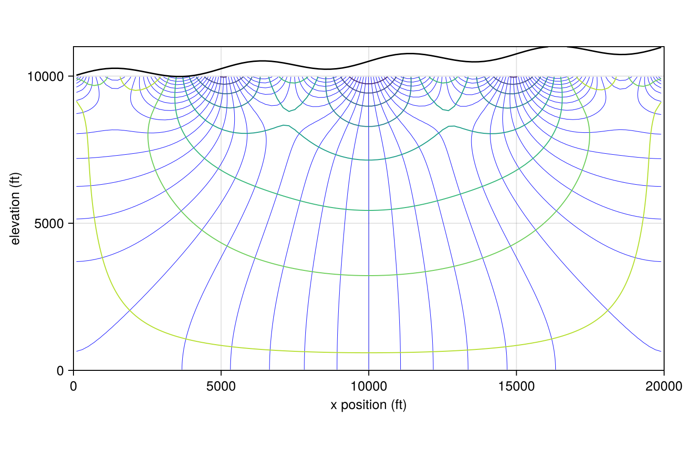
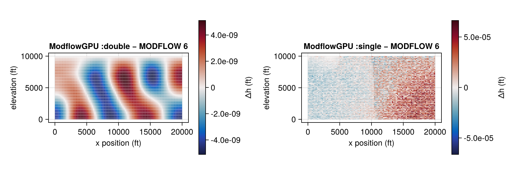

Tóth: flow systems in a small drainage basin
The classic problem of Tóth (1963): steady flow in a vertical cross-section of a drainage basin, 20 000 ft long and 10 000 ft deep, whose water table rises gently to the right and has a sinusoidal relief of hills and valleys on top of that. Local flow systems from each hill to the next valley lie over intermediate and regional ones that cross the whole basin. The section has 200 layers of 50 ft and 100 columns of 200 ft (one row), K = 1 ft/d, and constant heads (CHD) along the top layer that set the water table.
This is the MODFLOW 6 example ex-gwf-toth; the figure below is redrawn from ModflowGPU's output in the same way.
Input and the MODFLOW 6 run
ExampleTools is the helper module of this gallery (docs/ExampleTools.jl in the repository). Its example_run takes the input of the example from the released mf6examples.zip, sets the tight closures of the parity tests in its IMS file (OUTER_DVCLOSE 1e-9, INNER_DVCLOSE and INNER_RCLOSE 1e-10), and runs MODFLOW 6.8.2 on it, so that both programs solve the same input to the same closure.
using ModflowGPU, CairoMakie
mf6 = example_run("ex-gwf-toth")
mf6.mode, mf6.mf6_time("tight", 0.219709222)The ModflowGPU run
ModflowGPU runs the same folder on the CPU, once in :double and once in :single precision, with its default preconditioner (the IMS file asks for ILU0, which is replaced by multicolour ILU0). run_modflowgpu calls run_simulation(dir; precision, outdir) and times it; the output goes to a folder of its own next to mf6's output.
runs = Dict(p => run_modflowgpu(mf6.dir, p) for p in (:double, :single))
r = runs[:double].result
r.converged, length(r.steps)(true, 1)Heads and flow
Heads and the flows between cells are read from ModflowGPU's head and budget files. The specific discharge at the cell centres is computed from the FLOW-JA-FACE record as MODFLOW 6 computes it for SAVE_SPECIFIC_DISCHARGE, and the stream function as in the MF6 example: the horizontal specific discharge summed over the layers from the bottom up. Head contours every 25 ft from the top of the model, ten stream-function contours, and the water table (the heads of the constant-head cells).
g = read_dis_grid(mf6.dir)
h = read_head(open_head_file(r.head_file), 1) # (ncol, nrow, nlay)
flowja = vec(only(read_budget(open_budget_file(r.budget_file); text = "FLOW-JA-FACE")))
qx, _ = specific_discharge(g, flowja, h)
u = qx[:, 1, :] # (ncol, nlay), layer 1 on top
ψ = reverse(cumsum(reverse(u; dims = 2); dims = 2); dims = 2)
z = h[:, 1, 1] # the water table (CHD heads)
top = g.top[1, 1]
fig = Figure(; size = (720, 480), figure_padding = (8, 24, 8, 8)) # room for the last x tick label
ax = Axis(fig[1, 1]; xlabel = "x position (ft)", ylabel = "elevation (ft)", aspect = DataAspect(), xtickformat = intformat)
section_contour!(ax, g, h; row = 1, levels = collect(top:25.0:maximum(z)), color = :blue, linewidth = 0.5)
section_contour!(ax, g, reshape(ψ, g.ncol, 1, g.nlay); row = 1, levels = range(extrema(ψ)..., length = 10))
lines!(ax, g.xc, z; color = :black)
limits!(ax, 0, 20_000, 0, 11_000)
save_figure(fig, "ex-gwf-toth")
Comparison with MODFLOW 6
The difference of the heads of ModflowGPU and MODFLOW 6 in the section, in both precisions. In :double the difference is a few nanometres (rounding of the two solvers); in :single it is set by the Float32 rounding of the heads.
h6 = read_head(open_head_file(only(filter(endswith(".hds"), readdir(mf6.dir; join = true)))), 1)
fig = Figure(; size = (900, 330))
for (k, p) in enumerate((:double, :single))
d = read_head(open_head_file(runs[p].result.head_file), 1) .- h6
m = maximum(abs, d)
local ax = Axis(fig[1, 2k - 1]; title = "ModflowGPU :$p − MODFLOW 6", xlabel = "x position (ft)", ylabel = "elevation (ft)", aspect = DataAspect(), xtickformat = intformat)
pl = section_heatmap!(ax, g, d; row = 1, colormap = :balance, colorrange = (-m, m))
Colorbar(fig[1, 2k], pl; label = "Δh (ft)", tickformat = expformat)
end
save_figure(fig, "ex-gwf-toth-difference")
The largest differences over all cells, and the largest budget difference (a budget-file flow or a listing-table rate, relative to the total inflow), next to the values of the parity table. The CPU times are those of this build (they include compilation when a run is the first of the session); the GPU times are those of the parity table, on an AMD Radeon RX 7800 XT.
stats = Dict(p => (; cmp = compare_with_mf6(mf6.dir, runs[p]), runs[p].time) for p in (:double, :single))
comparison_table("ex-gwf-toth", stats; unit = "ft")| Preset | max |Δh| (ft), this build | max |Δh| (ft), parity table | Budget, this build | Budget, parity table | CPU time, this build (s) | GPU time, parity table (s) |
|---|---|---|---|---|---|---|
:double | 5.1e-09 | 5.1e-09 | 3.3e-13 | 3.3e-13 | 0.63 | 0.05 |
:single | 6.6e-05 | 6.6e-05 | 3.2e-07 | 3.2e-07 | 0.57 | 0.07 |
Budget: the largest difference of a budget-file flow or a listing-table rate, relative to the total inflow of its time step.